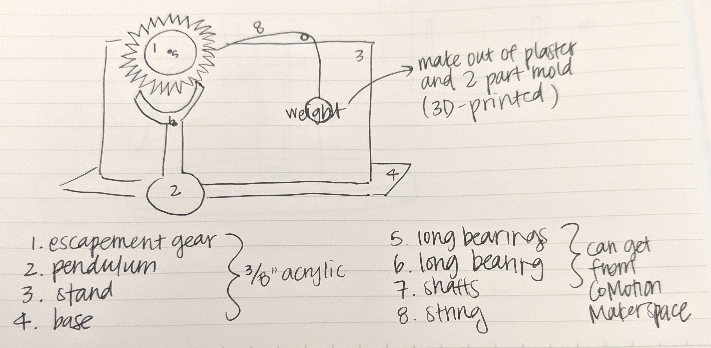

Cindy Feng's Final Project Proposal
Concept
I knew I wanted to do a clock, but after an hour of searching for a simple DIY gravity-powered clock, I found myself searching videos of escapement mechanisms that could be adapted for a clock build later on. I didn't want to overload myself with creating a perfectly accurate clock for this final project. This is what came up after I searched for clock pendulum mechanisms.
This instructables was taken from a UCSD tutorial for how to create this clock for an undergraduate class, but I plan on using the CAD models that are offered to UCSD mechanical engineering undergrad students to complete this projet, and add my own creative flair! Here's a video from the source instructables just to convey what I will be trying to do:
The basic concept is that a weight on a wound string attached to the wheel axis causes the wheel to spin, but the pendulum teeth prevents the gear from spinning freely, so it "ticks." This is a simple escapement mechanism that is gravity-powered and is the basic concept behind pendulum clocks!
Because this project is just a demonstration of an escapement mechanism, the intended use case is to be a wall or tabletop decoration. Applications of escapement mechanisms in everyday objects are clocks, metronomes, motors, things that "tick"! With accurate gear ratios, I could turn this project into a clock in the future!
I wanted to see if I could come up with a different design than what was given to UCSD MAE students. I decided I wanted the weight that coils the wheel to be seen, so I decided to draw it off to one side and still causing the wheel to spin.
I wanted most of the pieces to be acrylic, but I also wanted to use the extra materials I already bought for this class -- FR1, oomoo silicon, and plaster. Therefore, I decided the escapement wheel and the pendulum would be acrylic, probably 3/8" which I would procure from the MILL, and the weight would be made of plaster molded from the silicone mold! The bearing and fasteners I believe I will just get from Fluke. I am still deciding how to use the FR1... I originally wanted to add a PCB component but I think that is too ambitious.

However, my backup plan is just to stick with the dimensions drawn out in the instructables tutorial! Or to just take the dxf from the tutorial and modify it.

Tasks and Timeline
Given that is now Wednesday and I have not started on this project, I am breaking down my tasks by day until the last class:
- Wednesday: Purchase acrylic from the MILL. See if Fluke carries shafts/bearings
- Thursday-Sunday: CAD modeling and design. Molding and casting at home.
- Monday: Fabrication -- Laser cutting of acrylic. Contingency plan: 3D printing with purchased filament from the MILL/Fluke
- Tuesday: Assembly and finishing in Fluke
- Wednesday before class: Buffer time and any last minute finishing!
My general contingency plan is if any parts fail, my CAD design will be good enough so I can 3D print it! I am honestly worried that there will be a lot of students on Monday and Tuesday in the makerspaces working on their projects, so I am planning on taking Monday off work to spend in the MILL and hop on a laser cutter when possible.
Bill of Materials
- 1 sheet of 3/8" acrylic from the MILL to be purchased Wednesday
- shafts, bearings, and fasteners from Fluke (need to check what sizes they have) to be obtained/purchased Wednesday
- string from home
- Oomoo 2-part silicon and plaster, already procured